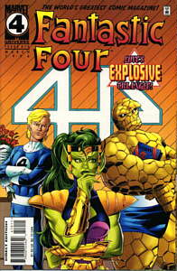

LIRA
Marital Status :Divorced
|
 |
|
Strength Level :Unknown, although she can increase her strength level by shape shifting into a stronger form
|
|
Favorite Story Line :Fantastic Four 358, Alicia is revealed to be a skrull and the ending has a great issue when she dies at the end. Somehow, I should of realized she survived.
|
| Least
Favorite Story Line: All of her appearances. No, wait,
could it of been when Ben fell in love with her, when she gave
birth to a bizarre creature that would destroy the team, when
Johnny got back with her and broke up a dozen or so times. Yeash,
what a revolting development!!
|
|
Little Known Fact :Skrulls require a device to lower the density of their bodies to give birth due to their bizarre genetic makeup, euw. |
Powers :Lyra can change form to any animal or creature, thus gaining their density and strength of that creature. Lyra can also mimic nearly anything as long as the mass is somewhat equal to her own. The skrull heartbeat doesn't change during the transformation, thus a person with extra sensory hearing could detect a skrull in hiding. Lyra could project plasma blasts through her wrists until she gave birth.